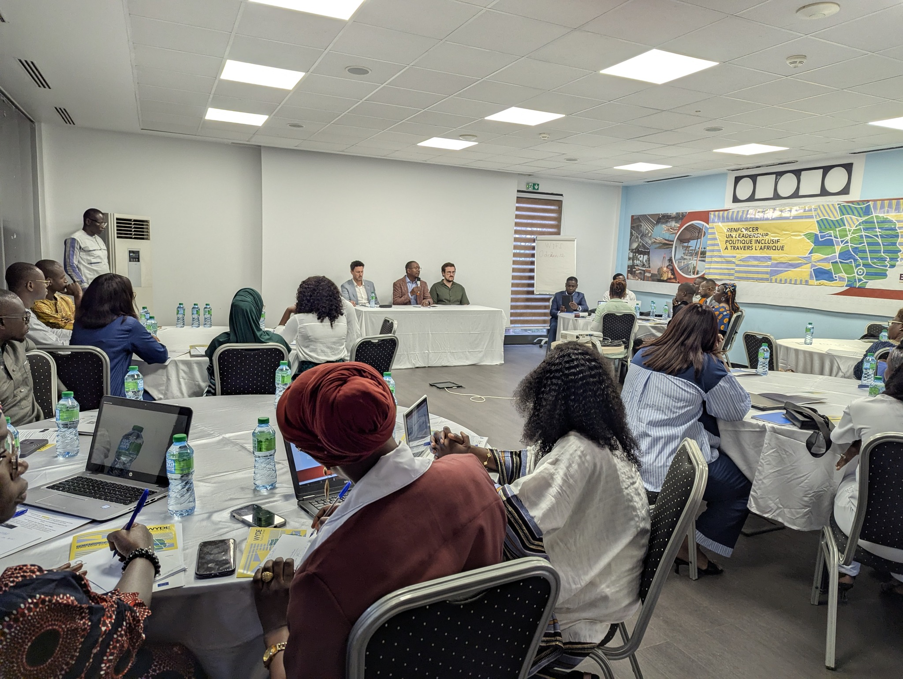

L’Institut Général Tiémoko Marc Garango pour la Gouvernance et le Développement (IGD) est un organisme non gouvernemental de droit burkinabè, à vocation régionale, spécialisé dans les domaines de la gouvernance, du droit et du développement.
Son siège est situé à Ouagadougou, Cité Azimmo (Ouaga 2000). Le réseau de l’Institut dépasse les frontières du Burkina Faso et couvre l’Afrique de l’Ouest francophone (Burkina Faso, Bénin, Côte d’Ivoire, Mali, Niger, Sénégal, Togo).

~400
Alumni (jeunes & femmes)
7
Pays couverts
2008
Reconnaissance officielle
+
Partenariats stratégiques
La naissance de l’Institut est l’aboutissement d’un processus de consultation de partis politiques de la sous-région sur le projet de création d’une école de formation des élites politiques.
Cette consultation, menée fin 2007 par un groupe d’enseignants-chercheurs au Burkina Faso, au Bénin, au Mali et au Niger, a conduit à la création d’un projet dénommé « École des partis politiques ». Dans ce contexte de renforcement de la démocratie par la formation des élites, l’IGD a été créé et officiellement reconnu en 2008.
Le but de l’Institut est de promouvoir les meilleures idées sur les grands défis politiques, sociaux et économiques du XXIᵉ siècle auxquels la jeunesse africaine, en particulier, est confrontée. Le travail de l’Institut est motivé par un réseau de décideurs et de chercheurs universitaires spécialisés sur les enjeux de long terme : gouvernance, politiques publiques, économie politique, attitudes sociales et affaires internationales, complété par l’expertise de l’équipe IGD.
En 2009, l’Institut a choisi de porter le nom du général Tiémoko Marc Garango (1927-2015), une figure historique et politique au Burkina Faso. Par cette décision, consacrée par le récépissé n°2010-872 du 31 décembre 2010, les fondateurs de l’Institut ont voulu perpétuer les valeurs qu’il a portées et reconnaître sa contribution à la bonne gouvernance et au développement.
Ancien diplômé de « Science-Po Aix », Ministre des Finances et du Commerce et Médiateur du Faso, il s’est distingué par son intégrité morale, son sens élevé du devoir et sa rigueur dans la conduite des affaires de l’État.
L’Institut est administré par un Conseil d’administration (CA) composé de personnalités issues des pays ouest-africains.
La direction exécutive coordonne et met en œuvre les activités conformément aux orientations du CA, avec une équipe technique composée notamment de :
Depuis sa création, l’IGD a mis en œuvre plusieurs programmes de renforcement de capacités et de recherche en partenariat avec la Fondation internationale du parti du centre suédois (CIS), l’Union européenne, le GRIP (Bruxelles), Diakonia, etc.
L’Institut travaille avec un large réseau d’alumni (environ 400 jeunes et femmes) issus du Sénégal, du Mali, du Niger, du Bénin, de la Côte d’Ivoire, du Burkina Faso et du Togo.
L’IGD se singularise par ses activités de recherche et surtout de renforcement de capacités des acteurs de la gouvernance démocratique nationaux et sous-régionaux. L’Institut bénéficie de la confiance de partenaires financiers et a géré d’importantes ressources pour déployer ses activités au Burkina Faso et dans la sous-région ouest-africaine.